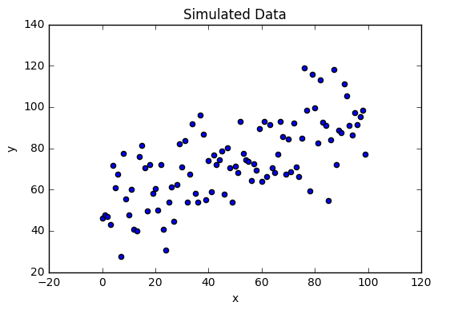
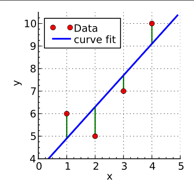
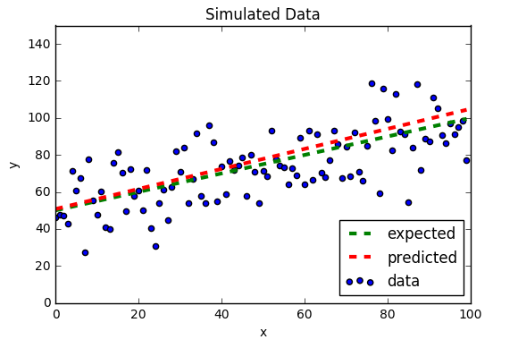

What is a Linear Regression task?
Simple Example

- Here, $x \in \mathbb{R}^1$, $y \in \mathbb{R}^1$
- It looks like there is a general upwards "trend", but how do we find the best"trend"?
- What will our solution look like?
Equation of a Line
- Your first thought might be to map that with something like, $y=mx+b$
- This works great for $1D$ examples, but our data is much more complex
- Redefine the "line" with linear algebra, and let
- $y = mx + b = \begin{bmatrix}1 & x\end{bmatrix}\begin{bmatrix} b \\ m \end{bmatrix}$
Some Slight Notational Adjustments
- Let $x \in \mathbb{R}^{d+1}$: add $x_0 = 1$
- this is a NECESSARY switch (more on why later)
- $X = \begin{bmatrix} 1 & x_1 & ... & x_n\end{bmatrix}$
- Let $W = \begin{bmatrix} b \\ m \end{bmatrix} = \begin{bmatrix} w_0 \\ w_1 \end{bmatrix}$
- Let $Y = y$; capital since it is "technically" a matrix
- $Y = XW$: the equation of a basic line
- $Y \in \mathbb{R}^{n \times 1}, X \in \mathbb{R}^{n \times d + 1}, W \in \mathbb{R}^{d+1 \times 1}$
Intuition
- given a real valued input with some number of features, provide the "most-likely" real valued output
- Given: $\left\{(x_i, y_i)\right\}_{i=1}^n$, $x_i \in \mathbb{R}^d, y_i \in \mathbb{R}^d$
- Model: $Y = XW + ?$
- Can we find the weights for our model that minimize some sort of "loss" incurred on bad predictions?
Simple Example
- Notice we could not fit this data with $Y=XW$
- Why? Look at all the noise!
- Better model: $Y = XW + \epsilon$
- $\epsilon \in \mathbb{R}^n$: all $n$ data points we are given have some error element
The Model
$Y = XW + \epsilon$
\[\begin{align*}
\begin{bmatrix}
y_1 \\ y_2 \\ \vdots \\ y_n
\end{bmatrix}
&=
\begin{bmatrix}
1 & x_{11} & x_{12} & ... & x_{1d} \\
1 & x_{21} & x_{22} & ... & x_{2d} \\
\vdots & \vdots & \vdots & \ddots & \vdots \\
1 & x_{n1} & x_{n2} & ... & x_{nd} \\
\end{bmatrix}
\begin{bmatrix}
w_0 \\ w_1 \\ w_2 \\ \vdots \\ w_d
\end{bmatrix}
+
\begin{bmatrix}
\epsilon_1 \\ \epsilon_2 \\ \vdots \\ \epsilon_n
\end{bmatrix}
\end{align*}\]
LS: Least Squares
- Goes by many names: Ordinary Least Squares, Sum of Squared Residuals, Sum of Squared Error, etc.
- You pick; I personally like Sum of Squared Residuals (SSR); many people prefer Least Squares (course preferred)
- Disclaimer: the first time I saw this, I just zoned out because it didn't make any sense :(
- Try and bear with me, and let me know if something is unclear
What is a Residual?
- A "residual" is just our error $\epsilon_i$ for a particular data point
- How much our prediction is "off" by
- Red is our data points, blue is our "estimate", green is our residual/error

Defining our Loss
- If we have $Y = Xw + \epsilon$, then $\epsilon = Y - Xw$
- Loss function: $L(w | X, Y) = \textrm{argmin}_{w}f(\epsilon)$
- What function $f(\epsilon)$ should we pick to minimize the error?
- Remember our discussion on norms...
Finally, a Loss function!
- let $f(\epsilon) = ||\epsilon||_2^2 = ||Y - Xw||_2^2$
- Our model becomes: $L(w | X, Y) = \textrm{argmin}_{w}||Y - Xw||_2^2$
- Pick the weights $w$ that minimize our error, or the difference between our observations $Y$ and our predictions $\hat{Y} = XW$
- How can we figure this out?
MV Calc to the rescue
- Let's step back for a second and look at our model in terms of a matrix and iterative interpretation
- Remember the $L2$ norm: $\left|\left|x\right|\right|_2 = \sqrt{\sum_{i=1}^n x_i^2}$
- Here, we have $||\epsilon||_2^2 = \sum_{i=1}^n \epsilon_i^2$ (note the $\sqrt{\cdot}$ disappears!)
- This represents a link between our matrix representation, and a more intuitive representation going element by element
Note: $y_i \in \mathbb{R}$, $x_i \in \mathbb{R}^{d + 1}$, $w \in \mathbb{R}^{d+1}$
\[\begin{align*}
LS = \sum_{i=1}^n \epsilon_i^2 &= \sum_{i=1}^n (y_i - x_iw)^2 \\
&= \sum_{i=1}^n \left(y_i - \sum_{j=0}^d x_{ij}w_j\right)^2 \\
\end{align*}\]
- Minimize MV function: $\nabla_w LS = \begin{pmatrix} \frac{\delta LS}{\delta w_0} & ... & \frac{\delta LS}{\delta w_d} \end{pmatrix}=0$
Take a derivative wrt each element of our coefficients $w_k$
\[\begin{align*}
\frac{\delta LS}{\delta w_k} &= \frac{\delta \sum_{i=1}^n \left(y_i - \sum_{j=0}^d x_{ij}w_j\right)^2}{\delta w_k} \\
&= \sum_{i=1}^n -2x_{ik}\left(y_i - \sum_{j=0}^d x_{ij}w_j\right) \\
&= \sum_{i=1}^n \left(-2x_{ik}y_i + 2x_{ik}\sum_{j=0}^d x_{ij}w_j\right) \\
&= \sum_{i=1}^n -2x_{ik}y_i + \sum_{i=1}^n \left(2x_{ik}\sum_{j=0}^d x_{ij}w_j\right)
\end{align*}\]
Note: looking for a local optima, so set derivative equal to zero
\[\begin{align*}
0 &= \sum_{i=1}^n -2x_{ik}y_i + \sum_{i=1}^n \left(2x_{ik}\sum_{j=0}^d x_{ij}w_j\right) \\
\sum_{i=1}^n x_{ik}y_i &= \sum_{i=1}^n \left(x_{ik}\sum_{j=0}^d x_{ij}w_j\right)
\end{align*}\]
Next step is tough
- If you look closely though, the entire thing is wrought with our lin alg "cheats"
- Goal: Put it back into a matrix
- Think about the geometry and how the matrices line up
Left Half
$\sum_{i=1}^n x_{ik}y_i = \sum_{i=1}^n \left(x_{ik}\sum_{j=0}^d x_{ij}w_j\right)$
- First, let's look just at the left half, $\sum_{i=1}^n x_{ik}y_i$
- Think about the matrix interpretation of this operation: what is $i$?
- How is $i$ interpretted geometrically on $X$? $Y$?
Lin Alg Refresher
Given $x,y \in \mathbb{R}^n = \mathbb{R}^{n \times 1}$ two column vectors, $z \in \mathbb{R}^{1 \times n}$ a row vector
- Inner product: dot product between two column vectors (DOWN $x$, and DOWN $y$)
- $\langle x, y\rangle = x^T \cdot y = x^Ty \in \mathbb{R}^{1 \times 1}$
- Dot product between a row vector and a column vector (ACROSS $z$, and DOWN $x$)
- $z\cdot x = zx \in \mathbb{R}^{1 \times 1}$
Left Half
$\sum_{i=1}^n x_{ik}y_i = \sum_{i=1}^n \left(x_{ik}\sum_{j=0}^d x_{ij}w_j\right)$
\[\begin{align*}
X &= \begin{bmatrix}
1 & x_{11} & x_{12} & ... & x_{1d} \\
\vdots & \vdots & \vdots & \ddots & \vdots \\
1 & x_{n1} & x_{n2} & ... & x_{nd} \\
\end{bmatrix}, Y = \begin{bmatrix}
y_1 \\ \vdots \\ y_n
\end{bmatrix}
\end{align*}\]
- notice that $i=1...n$ goes DOWN the training examples $x_k$ for the $k^{th}$ feature
- notice that $i=1...n$ goes DOWN the column of $Y$
- Since $x_k, Y$ are both vectors, this is just an inner product!
Simplified Left Half
$\sum_{i=1}^n x_{ik}y_i$
\[\begin{align*}
x_k &= \begin{bmatrix}
x_{1k}\\ \vdots \\ x_{nk}
\end{bmatrix}, Y = \begin{bmatrix}
y_1 \\ \vdots \\ y_n
\end{bmatrix}
\end{align*}\]
- Geometrically, our sum is just $x_{1k}y_1 + ... + x_{nk}y_n$
- So, this is equivalent to $\langle x_k, Y\rangle = x_k^TY$
Right Half part 1
$x_k^TY = \sum_{i=1}^n \left(x_{ik}\sum_{j=0}^d x_{ij}w_j\right)$
\[\begin{align*}
X &= \begin{bmatrix}
1 & x_{11} & x_{12} & ... & x_{1d} \\
\vdots & \vdots & \vdots & \ddots & \vdots \\
1 & x_{n1} & x_{n2} & ... & x_{nd} \\
\end{bmatrix}, w = \begin{bmatrix}
w_0 \\ \vdots \\ w_d
\end{bmatrix}
\end{align*}\]
- What is $j$ doing here on $x_i$?
- Going ACROSS the features of $i^{th}$ training example
- $x_i = \begin{bmatrix}1 & x_{i1} & x_{i2} & ... x_{id}\end{bmatrix}$
- Going DOWN the feature coefficients of $w$
- This is just a simple dot product: $x_i w$
Right Half part 2
$x_k^TY = \sum_{i=1}^n \left(x_{ik}x_iw\right)$
\[\begin{align*}
X &= \begin{bmatrix}
1 & x_{11} & x_{12} & ... & x_{1d} \\
\vdots & \vdots & \vdots & \ddots & \vdots \\
1 & x_{n1} & x_{n2} & ... & x_{nd} \\
\end{bmatrix}, w = \begin{bmatrix}
w_0 \\ \vdots \\ w_d
\end{bmatrix}
\end{align*}\]
- What does $x_iw$ look like over all $i$?
- Easy: This is just column vector $Xw$, a vector where the $i^{th}$ element is $x_iw$
Right half part 3
\[\begin{align*}
X &= \begin{bmatrix}
1 & x_{11} & x_{12} & ... & x_{1d} \\
\vdots & \vdots & \vdots & \ddots & \vdots \\
1 & x_{n1} & x_{n2} & ... & x_{nd} \\
\end{bmatrix}, Xw = \begin{bmatrix}
x_1w \\ \vdots \\ x_nw
\end{bmatrix}
\end{align*}\]
- What is $i$ doing on $x_i$?
- Going DOWN the $i^{th}$ training example
- What is $i$ doing on $x_{ik}$? Going DOWN the training examples $x_k$ for the $k^{th}$ feature
- Another inner product: just $\langle x_k, Xw\rangle = x_k^TXw$
Putting it together
\[\begin{align*}
x_k^TY &= x_k^TXw
\end{align*}\]
- just stack the $x_k$s into another matrix
- Remember: $k$ goes over columns (features) of $X$
\[\begin{align*}
X_{\textrm{stacked}} &= \begin{bmatrix}
\vdash x_0\dashv \\ \vdots \\ \vdash x_d \dashv
\end{bmatrix} = \begin{bmatrix}
1 & ... & 1 \\ \vdots & \ddots & \vdots \\ x_{1d} & ... & x_{nd}
\end{bmatrix}
\end{align*}\]
- But... $X_{\textrm{stacked}}$ is just $X^T$
Solution
\[\begin{align*}
X^TY &= X^TXw \\
\hat{w} &= (X^TX)^{-1}X^TY
\end{align*}\]
- Now let's do it again but with matrices...
Matrix Derivation
- This one is a little less intuitive, but once you see it, is MUCH simpler
\[\begin{align*}
LS &= ||\epsilon||_2^2 = \langle \epsilon, \epsilon \rangle = \epsilon^T\epsilon \\
&= (Y - Xw)^T (Y-Xw)
\end{align*}\]
Remember to distribute the transpose linearly and reverse your terms as you transpose...
\[\begin{align*}
&= \left(Y^T - w^TX^T\right)(Y - Xw) \\
&= Y^TY - w^TX^TY - Y^TXw + w^TX^TXw
\end{align*}\]
- Remember this is the SUM of SQUARED RESIDUALS/ERROR
- SUM means it is scalar!
- Then these things summing to equal LS are scalar. so $Y^TY, -w^TX^TY, - Y^TXw,w^TX^TXw$ are ALL also scalars
- Means then are all $\in \mathbb{R}$
- If $x \in \mathbb{R}$, $x=x^T$!
- So... $-w^TX^TY = (-w^TX^TY)^T = Y^TXw$
\[\begin{align*}
LS &= Y^TY - w^TX^TY - Y^TXw + w^TX^TXw \\
&= Y^TY - 2Y^TXw + w^TX^TXw \\
\frac{\delta LS}{\delta w} &= -2(Y^TX)^T + 2X^TXw = 0 \\
X^TY &= X^TXw
\end{align*}\]
- note: $\frac{\delta [Xw]}{\delta w} = X^T$
- $\frac{\delta [w^TX^TXw]}{\delta w} = 2X^TXw$
Solution
\[\begin{align*}
X^TY &= X^TXw \\
\hat{w} &= (X^TX)^{-1}X^TY
\end{align*}\]
- Note: Same solution as before; far fewer steps!
Prediction
- Given: $X_{new} \in \mathbb{R}^{d+1}$, a new example
- Trained $\hat{w}$ using the closed form solution we just derived
- $\hat{Y} = X_{new}\hat{w}$
Example Simulated Data Plot
Actual vs. Expected Solution

SK-Learn
- This model is simple: probably easiest to implement it ourselves
- Many will not be
- Get used to SK-learn while our models are simple
Input Data
- SKLearn expects your inputs to be formatted properly; when using SKLearn, this is the hardest part
- VERY easy to misuse pre-built, black-box software
- For this reason, when you use black-box software, we EXPECT you to TEST and SHOW us that what you are doing is correct
- It's easy to get a seemingly "correct" answer and still make mistakes